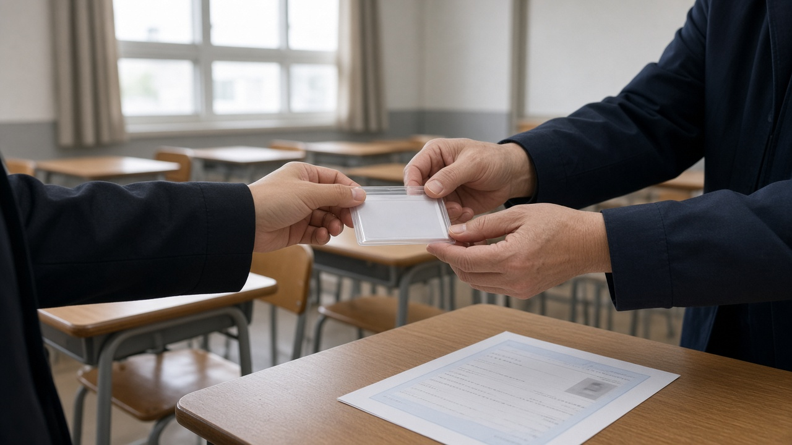
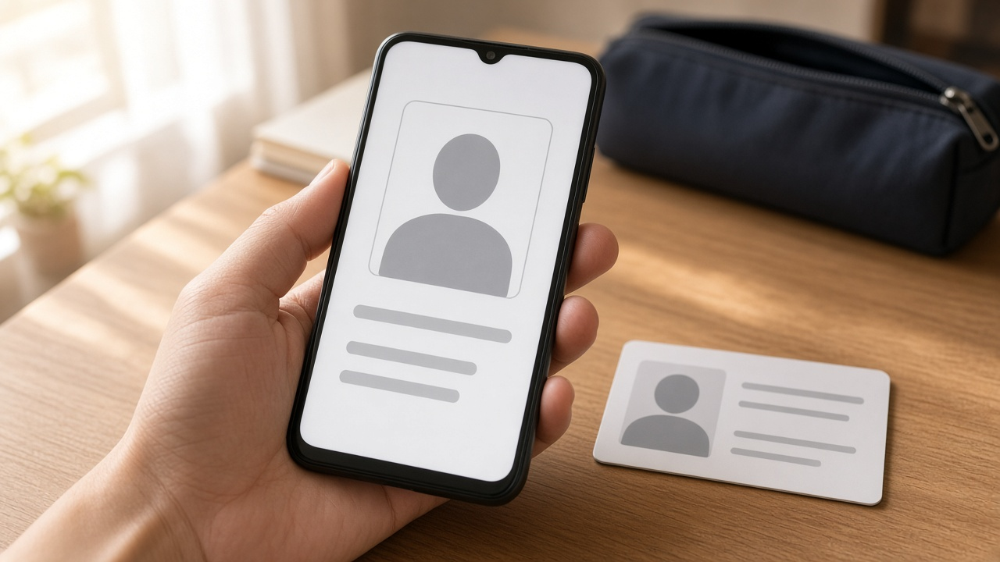
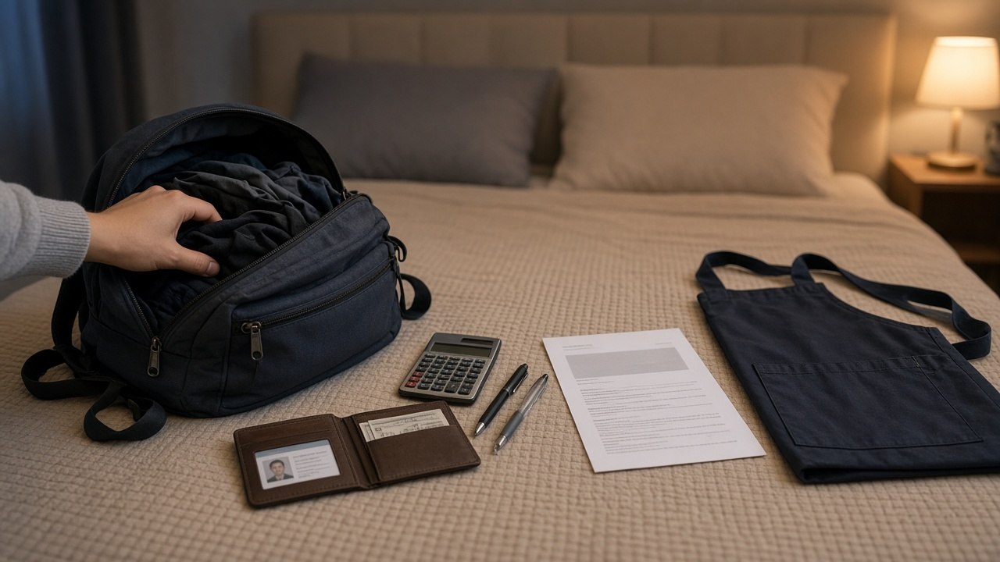

국가기술자격 시험장 신분증, 모바일 신분증은 되고 캡처 화면과 대학 학생증은 안 되는 이유

기사 제3회 실기시험이 한창이라 이번 주말이나 다음 주에 시험장에 가시는 분들 많으시죠.
공부는 열심히 했는데 시험 당일 신분증 때문에 입실을 못 하면 정말 허탈할 거예요.
마침 한국산업인력공단이 10월 27일 국가자격검정 인정신분증 범위를 조정해 다시 안내했어요. 오늘은 어떤 신분증이 되고 어떤 건 안 되는지 시험 전에 꼭 짚어 볼 것만 정리해 볼게요.
신분증이 없으면 시험을 아예 볼 수 없어요
한국산업인력공단이 시행하는 국가자격검정은 시험 당일 인정신분증을 반드시 지참해야 하고, 없으면 국가기술자격법령 등 관련 규정에 따라 응시할 수 없어요.
큐넷 일정표를 보면 2026년 기사 제3회 실기시험은 10월 24일부터 11월 13일까지 치러지고, 합격자 발표는 12월 11일과 12월 18일로 나뉘어 있어요.
그러니 지금 실기를 앞둔 분이라면 이번 안내를 바로 적용받는다고 보시면 돼요.
기준은 네 가지 정보예요. 사진, 주민등록번호나 최소한 생년월일, 이름, 발급기관의 직인 같은 발급자 표시가 모두 들어 있어야 인정돼요.
여기에 훼손이나 변형이 없는 원본이어야 하고, 인정 목록에 없는 증명서는 이 정보가 다 있어도 신분증으로 쳐 주지 않아요.

실물 신분증은 이런 것들이 인정돼요
가장 무난한 건 주민등록증이에요. 유효기간 안에 있는 주민등록증 발급신청 확인서도 인정돼요.
경찰청에서 발행한 운전면허증, 여권, 공무원증도 되고, 장교와 부사관, 군무원 신분증도 공무원증에 포함돼요.
주민등록번호가 적힌 장애인등록증, 예전 국가유공자증과 국가보훈등록증, 건설기계조종사면허증, 해양경찰청에서 발행한 동력수상레저기구 조종면허증도 쓸 수 있어요.
이미 따 둔 국가기술자격증도 신분증으로 인정되는데, 국가기술자격법에 따라 한국산업인력공단 등 10개 기관에서 발행한 것이어야 해요.
신분증이 낡아서 훼손된 경우에는 일단 시험은 볼 수 있게 해 주고, 따로 절차를 거쳐 사후에 신분을 확인한다고 해요. 그래도 시험 당일 마음 편하려면 상태 좋은 신분증을 챙기시는 게 좋겠죠.
모바일 신분증은 어디에 발급된 것까지 되는지 확인하세요
이번 안내에서 많이들 궁금해하시는 부분이 모바일 신분증이에요.
모바일 주민등록증, 모바일 운전면허증, 모바일 국가보훈등록증은 정부의 모바일 신분증 앱뿐 아니라 삼성월렛, 네이버, 토스, 카카오뱅크, KB스타뱅킹, 농협은행 앱에 발급된 것도 인정돼요.
모바일 장애인등록증은 모바일 신분증 앱에 발급된 것만 표시돼 있고, 모바일 공무원증은 관리자 승인을 받은 사람만 설치할 수 있는 전용 앱으로 확인해요.
정부24, 패스 앱, KB스타뱅킹 국민지갑, 우리WON뱅킹 원더월렛 등을 통한 모바일 주민등록증 확인서비스와 패스 앱 등을 통한 모바일 운전면허 확인서비스도 쓸 수 있어요.
국가기술자격증도 모바일로 보여 줄 수 있어요. 큐넷 전자지갑이나 모바일 신분증 앱에 발급된 모바일 국가기술자격증, 정부24나 패스, 네이버, 카카오, 삼성월렛 등에서 전자증명서로 받은 상장형 자격증, 네이버 자격증 서비스를 통한 자격증이 해당돼요.

캡처본과 사원증, 대학 학생증은 인정되지 않아요
가장 흔한 실수가 신분증 사진이나 앱 화면을 캡처해 두는 거예요.
신분증 원본이 아닌 화면 캡처본, 녹화본, 촬영본, 복사본은 모두 인정되지 않아요. 모바일 신분증은 반드시 해당 앱에서 실시간으로 띄워 보여 줘야 한다는 뜻이에요.
건강보험증, 주민등록초본, 대학 학생증, 사원증, 민간자격증, 신용카드, 운전경력증명서도 신분증으로 쓸 수 없어요.
대학생이나 직장인이라면 학생증이나 사원증만 들고 가는 일이 없도록 주민등록증이나 운전면허증을 따로 챙기세요.
휴대폰 배터리가 떨어지거나 앱 로그인이 막히는 경우도 생각해서, 모바일 신분증만 믿기보다 실물 신분증을 하나 같이 챙기는 편이 안전해요.
학생과 군인, 외국인 수험자는 따로 정해진 서류가 있어요
초등학생부터 고등학생, 만 18세 이하 수험자는 사진과 생년월일, 이름, 학교장 직인이 모두 있는 학생증을 쓸 수 있어요.
나이스나 정부24에서 발급한 재학증명서도 되는데, 학교장 직인이 있어야 하고 발급일로부터 1년 이내여야 해요. 휴대폰으로 보여 줄 때는 정부24 앱 전자문서지갑에 발급된 재학증명서만 인정돼요.
학교장이 확인하고 직인을 찍은 국가자격검정용 신분확인증명서, 청소년증, 국가자격증도 쓸 수 있지만 국가공인 민간자격증과 일반 민간자격증은 안 돼요.
병사 신분의 군인은 소속 부대장이 증명하고 날인한 국가자격검정용 신분확인증명서가 필요하고, 미취학 아동은 공단이 발행한 국가자격검정용 임시신분증이나 국가자격증을 써요.
신분확인증명서에 붙이는 사진은 발급일 전 6개월 안에 모자 없이 찍은 상반신 정면 컬러 사진이어야 하고, 사진과 용지에 걸쳐 직인을 찍은 뒤 투명 테이프로 붙여야 해요.
외국인 수험자는 외국인등록증과 모바일 외국인등록증, 외국국적동포 국내거소신고증, 영주증을 쓸 수 있어요.
오늘 내용은 10월 31일 기준 큐넷에 올라온 한국산업인력공단 안내를 정리한 것이에요. 다른 기관이 주관하는 자격시험은 기준이 다를 수 있으니, 내가 접수한 시험의 공고와 수험표 안내를 꼭 한 번 더 확인해 보세요.
참고 자료 큐넷 원서접수 유의사항 국가자격검정 인정신분증 범위 조정 안내, 큐넷 2026년 기사 산업기사 회별 검정시행일정, 고시위크 2026년 10월 28일 보도
태그 국가자격시험신분증 큐넷신분증 인정신분증 모바일신분증 모바일운전면허증 기사실기시험 국가기술자격증 한국산업인력공단 자격증시험준비물 신분확인증명서